《最强大脑》第五季在角逐三十强席位的收官之战时，导演组出示了类似图2-1中所示的多个多面体。要求选手迅速选出其中之一，满足从某一顶点开始用一笔画出多面体的多条棱，不准遗漏也不得重复。答对并用时较少的选手晋级。
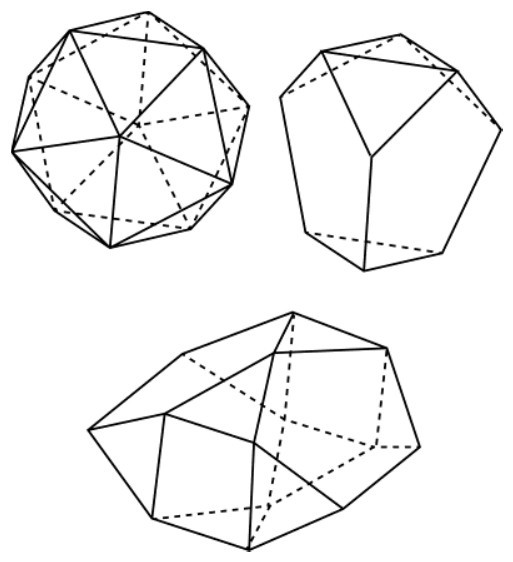
图2-1
在普鲁士东部，濒临波罗的海有一座古老而美丽的城市叫作哥尼斯堡。昔日此为一座重要的工业城市，为东普鲁士的首府，并有一所历史悠久的大学。哥尼斯堡被新河、旧河及布勒格尔河贯穿全城，并将全城分成了4部分。于是人们建造了7座桥，以把哥尼斯堡连成一体（如图2-2所示）。
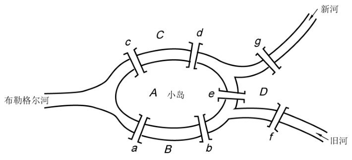
图2-2
每天城里的居民来往这7座桥，熙熙攘攘。望着淙淙流水，这里传出了一个有趣的问题：是否能够一次走遍所有这7座桥，而且每座桥只能走一次？
这个问题似乎不难，谁都乐意去试一下，只是日子一天天过去，也没有人做得到。随着此问题的传播，哥尼斯堡也因此出名。
1727年，欧拉受聘到俄国圣彼得堡科学院工作后，便听到了上述这个故事。他并不曾到过哥尼斯堡，但在听到这个问题后只花了几天的时间，便解决了此“七桥问题”。他首先将七桥问题转化为一数学模型。他看出两岸陆地及河中的岛都不过是桥的连接点，其大小及形状与问题无关，因此可将它们视为4个点。至于7座桥是7条必经的路线，它们的长短曲直也与问题本身无关，因此可以用任意7条曲线来表示。他先想到如图2-3所示的简化图，然后得到如图2-4所示的数学模型。
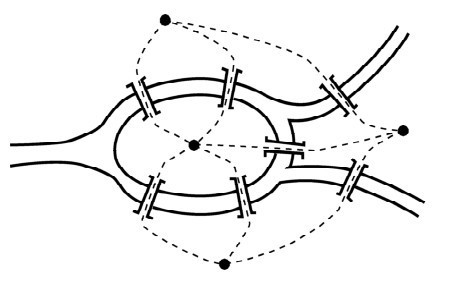
图2-3
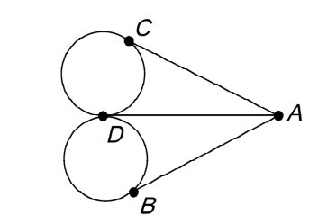
图2-4
如此，欧拉将七桥问题抽象成一个一笔画问题，即图2-4中的图形能否用一笔画出。接着欧拉发现，凡是能用一笔画出的图形，每当你用笔画一条线（可以是曲线）进入其中的一个点（除了起点与终点）时，你还必须画一条线离开此点，否则图形便不能以一笔画出。也就是说，除了起点与终点，图中每一个点都应与偶数条线相连（这种点称为偶点，反之称为奇点）。若起点与终点重合，则此重合点也应与偶数条线相连（故此点亦为偶点）；若起点与终点不重合，则此两点皆与奇数条线相连（故皆为奇点）。因此，可以一笔画出的图形，其奇点数必为0或2。
现在图2-4中，共有A,B,C,D 4个点，其中A,B,C分别与3条线相连， D与5条线相连。由于4点均为奇点，因此一笔画出此图形是不可能的，也就是想不重复地通过哥尼斯堡的7座桥是不可能的。
我们看到欧拉将一实际问题抽象化，虽然看不到河也看不到桥，但结果不但解决了原来的问题，连更一般的问题也一并解决了。
补充一点，上面这个答案尚不完整，这里还有一个从哪里开始画的问题。从上面的介绍中可以得到，凡奇点数为2的一笔画，图形必须以一个奇点作为起点，另一个奇点作为终点。
上节中我们关于七桥问题的论述是一种广为流传的说法（存在于各种图论教科书、数学史书籍和数学科普读物中），这样的描述看上去似乎非常合理，却与真实的历史不太相符。事实上，在欧拉1736年的论文中从来没有出现过任何具有现代意义的“图”，该问题与一笔画之间的联系直到19世纪末才被人们提及。图2-4是在1892年才首次出现于英国数学家罗兹·鲍尔的《数学游戏与古今问题》中，两者之间相差了150多年！
从数学史的角度来看，这可以算得上一个严重的错误。如果一段有关数学史实的记述连起码的真实性都做不到，那么它也就丧失了作为数学史内容而存在的价值。令人遗憾的是，这种以讹传讹的行为仍在延续。不过令人欣慰的是，在20世纪90年代出版的由卡兹所著的《数学史通论》一书中，关于欧拉解决七桥问题的记述已经回归了历史的本来面目。
笔者有幸读到北京化工大学理学院程钊先生发表于《数学传播》第36卷第4期上的一篇文章，它介绍了欧拉真实的解法。为此，略引于下，与广大读者分享。
欧拉写道：“我整个方法的根据是，以适当的并且简易的方式把过桥的行为记录下来。我用大写字母A,B,C,D表示被河分割开的陆地。当一个人从A地经过桥a或b到B时，我把这次过桥记作AB，第一个字母代表他来的地方，第二个字母代表他过桥后所到的地方。如果步行者接着从B经过桥f到D，这次过桥记作BD。这接连的两次过桥AB与BD我就用3个字母ABD来记录。”不难看出，按照欧拉的记法，记录过桥次数的字符串中的字母个数总是比桥数多1。因此，如果表示过7座桥就需要用8个字母（欧拉标注的A,B,C,D及桥的标号已在图2-2中列出）。
于是，七桥问题可以重新表述成：在用4个字母A,B,C,D排成的含8个字母的字符串中，有没有可能使AB（或BA）组合出现两次，AC（或CA）组合也出现两次，而AD,BD,CD这些组合各出现一次？接下来，欧拉想要寻找一个法则，使得对于这个问题或所有类似的问题都可以简易地判断出所要求的字母排法是不是行得通。欧拉注意到，如果去往某块陆地（比如说A，如图2-5所示）经过一座桥a，则不论步行者过桥前在A还是过桥后到A，字母A一定出现一次。如果经过3座桥a,b,c，那么不管他是不是从A出发，字母A都将出现两次。依次类推，如果通往A的桥的个数k是奇数，则字母A出现的次数为（k+1）/2。
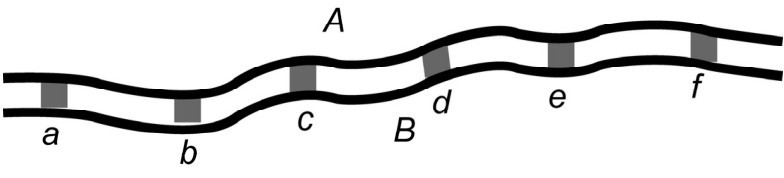
图2-5
本来至此为止，七桥问题已获得解决。因为通往A的有5座桥，所以字母A应出现3次，通往B,C,D的各有3座桥，因此它们各出现2次，这样总的字母个数为3+2+2+2=9。但这在含8个字母的字符串中是不可能的，从而七桥问题无解。欧拉进一步寻找类似的一般问题的求解法则，因此需要找到当桥的个数k是偶数时，字母A出现的规律。他发现如果步行者从某块连通k（k为偶数）座桥的陆地出发，则相应的字母出现
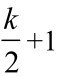
次；如果从别的陆地出发，则该字母出现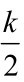
次。现在，欧拉给出了他的法则。
①将各块陆地用A、B、C等字母表示。
②记桥的总数为∧，将∧+1写在列表的上方。
③表的第一列列出代表各陆地的字母A、B、C等，第二列写下通往各陆地的桥数。
④在对应偶数的字母上打星号。
⑤如果桥数k为偶数，则取
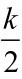
对应记入第三列；否则取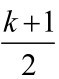
对应记入第三列。⑥将第三列各数加起来，如果该和等于桥的总数∧，则所要求的路线便存在，但必须要从带星号的陆地出发；如果该和等于∧+1，则所要求的路线也存在，但必须从不带星号的陆地出发。
作为上述法则的应用，欧拉举了一个4条河、2座岛、15座桥的例子（如图2-6所示），右边给出的是它的解答。
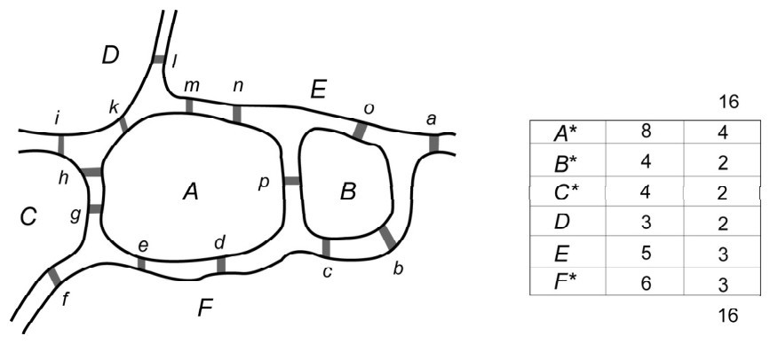
图2-6
第三列的数字加起来，得到和数16，与最上方的数相同。所以这条路线是满足要求的，但按照法则要从不带星号的地区D或E开始。欧拉确实给出了这样的一条路线：
Ea Fb Bc Fd Ae Ff Cg Ah Ci Dk Am En Ap Bo El D
其中夹在大写字母之间的小写字母指经过的桥。
欧拉并没有满足于给出一个一般的解答，他想的是还有没有可能用更简单的方法来判断呢？欧拉以他特有的对于数字的洞察力看出，表中第二列的各数加起来一定是实际桥数的2倍。因此，如果这些数里有奇数的话，奇数的个数一定是偶数。据此，欧拉通过对表的分析得到了下列更简便的法则。
①如果通奇数座桥的陆地不止两个，则满足条件的线路是找不到的。
②如果只有两个地方通奇数座桥，则可以从这两个地方的其中之一出发，找出所要求的路线。
③如果没有一个地方通奇数座桥，则无论从哪里出发，所要求的路线总能实现。
这个法则就是图论中现在所称的“欧拉定理”的最初形态。
下列谜题出自H·杜登尼所著的《坎特伯雷谜题集》。在8×8的方格中，罗密欧必须找出一条通向朱丽叶的路（如图2-7所示），在此过程中，他必须通过所有的方格各一次，还要使转弯的次数最少。这是一个有限制条件的一笔画问题，你能找到这条路径吗？答案见附录二。
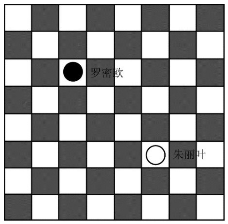
图2-7
拓扑学研究的是物体在弹性变形下保持不变的特征，你所考虑的物体就像一块橡皮泥或一个能够拉伸或拖曳的平面一样，拓扑学不考虑图形的大小、形状和刚直性。在拓扑学中，“多长”“多大”这类特征是没有意义的，它注意的是“哪里”“中间”“内部”或“外部”等性质。
对于一个简单多面体（指其中没有洞的多面体），我们可以把它去掉一个面，然后将其余部分展平，不让膜分裂，也不让它起褶痕。多面体的棱或许变成弯曲状的线，使图形变丑了，但利用伸缩自由性，它仍可以变成美丽的图形。如图2-8（a）的四面体ABCD，在底面BCD上开一个洞，然后向四周拉伸变成图2-8（b）的样式。外圈不整齐的一圈就是拉伸后小洞的轮廓，如果把开了洞的一面去掉，再把棱拉直或变曲就可以得到图2-8 （c）或（d）。所以在拓扑学的意义下，这4个图形是等价的。
有了这个概念，就可以把立体一笔画问题转化为平面一笔画问题。只要数一数这个多面体有多少个奇点，就可以得到正确的结论，选手们也可轻松晋级。
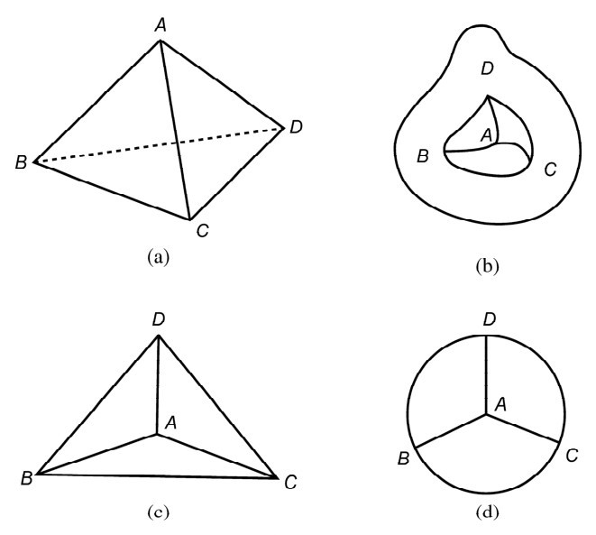
图2-8
如图2-9所示，蚂蚁和蜘蛛分别停在一个六面体的两个顶点上，蚂蚁得意地对蜘蛛说：“小蜘蛛，咱们来比赛吧。大家沿着棱爬，谁先爬过所有的棱到达顶点，谁就获胜。你敢和我比吗？”蜘蛛不声不响地点点头，比赛就这样开始了。你猜谁将取得胜利？为什么？
[此书 分 享微 信jnztxy]不妨假定六面体的棱长都相等，蚂蚁、蜘蛛的爬行速度也相同。问题的关键是谁能无重复地爬完所有的棱到达顶点A，这样问题就转化为空间一笔画问题。从图中可以看出点A、E均为奇点，而B、C、D为偶点，所以这个六面体是可以一笔画出的，但必须从奇点A或E开始。
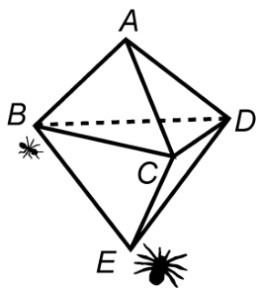
图2-9
蜘蛛的出发点是奇点（即有奇数条通路，这里是3条），终点A也是奇点，所以可以不重复地从E爬到A （E-D-C-B-D-A-B-E-C-A），每条棱只经过一次。而蚂蚁的出发点B是偶点，无法一次走完所有棱到达A点，必须走一些重复道路，因此落后于蜘蛛，正是“蚂蚁无知夸大口，蜘蛛多想拔头筹”。
素有“19世纪牛顿”之称的英国数学家、物理学家哈密顿（1805—1865）于1859年发明了一种新奇的玩具。它是一个木制的正十二面体（如图2-10左所示），有20个顶点、30条棱和12个面，且每个面都是正五边形。哈密顿在所有的顶点处分别标记了世界上的一个重要城市名。游戏的要求是，从某一个城市出发，沿着这个多面体的棱游遍这20个城市各一次，再回到出发地。这也是个立体一笔画问题。为了玩起来方便，哈密顿做了一个如图2-10右图所示的木制棋盘。各顶点处都挖有小孔，并插入一面旗子。游戏者第一次可拔去任一面旗子，以后只能拔去与刚拔去的旗子相邻者，直到所有旗子都拔光。哈密顿并做了如下文字说明：“十二面遨游，单身周游列国游戏。本玩具系爱尔兰天文学博士威廉·罗恩·哈密顿爵士的发明。宴会上作为即兴表演，无比稀奇。”
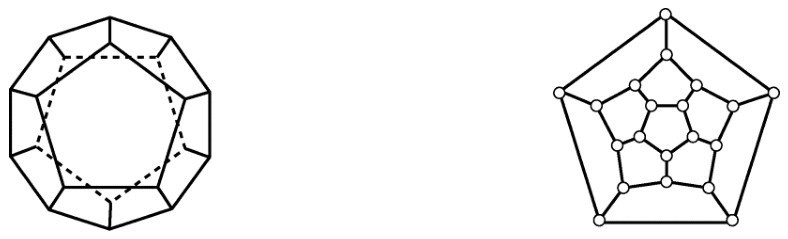
图2-10
一般地，从图的某个顶点出发，沿着棱经过每个顶点各一次，这条路线称为哈密顿路；如果最终又回到原出发的顶点，则称为哈密顿回路。有哈密顿回路的图叫哈密顿图。上述哈密顿周游世界的问题，实际上就是在哈密顿图上寻找哈密顿回路。著名数学家苏步青教授曾经通俗易懂地介绍过哈密顿回路的寻找方法。
周游路线显然是由这20个顶点连成的20角形的封闭折线，它的内部必由棋盘上的若干个五边形组成。因而，周游路线中的任一边不能为两个内部五边形的公共边，内部五边形中的任3个不会共顶点。进而，这些五边形不会围成环形（如图2-11所示），否则连贯的路线会被隔离成不连贯的两部分。综上所述，这些五边形必然是除两端外两两相邻的五边形链（如图2-12所示）。
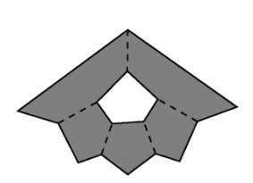
图2-11
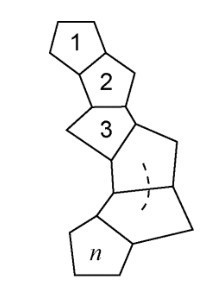
图2-12
设这个五边形链由n个五边形组成，因而总计应有5n条边，但在20角形内部的公共边有（n-1）条。因为每条公共边都算了两次，于是有
5n-2（n-1）=20
解之得n=6。这就是说，应设法找出6个五边形，除首尾两个不相连外，其余两两相邻且任3个五边形不共顶点。我们称之为五角形解链，简称解链。如图2-13即为两条解链，沿着这两条解链的边缘的路线即得所求的走法。显然，每个解链可得40种不同的走法。
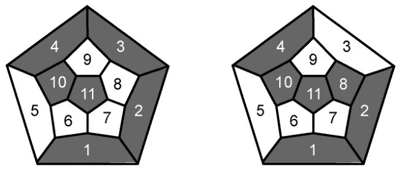
图2-13
为了确定解链的基本类型，我们将哈密顿棋盘上的每个五边形看作一个点，可得11个点；两个五边形相邻就用一条线将代表这两个五边形的点连起来，得到图2-14，这样一来所求的任一条五角形解链就成为图中联结6个顶点的5条边所组成的一条路。由于解链不成环，故此路的两个端点不相邻；又解链中任3个五边形不共顶点，故此路中任3点不两两相邻。符合上述条件的路线即为所求，简称解径。
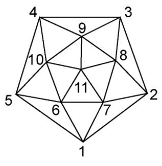
图2-14
显然，解径至多通过外边界的4个顶点，如顺次为1,2,3,4。第5个顶点不能取9（否则3,4,9两两相邻）只能取10，而第6个顶点不能取6（否则6与1相邻，6个数字成环）只能取11，于是得一条解径（1,2,3,4,10,11），其对应的五角形解链为图2-13左图。
如果外边界取3个顶点，便有两种方式。其一是这3点相邻，若取路径（1,2,3,…），接下来必取9，第5个顶点不论取10或11都得不到解径；若取路径（1,2,…,3），也组不成解径。其二是只有两点相邻，如取（1,2,…,4,…），则第3个顶点必取8，进而第4点必是11，第5点必为10，第6点为4，于是又得解径（1,2,8,11,10,4），其对应的解链为图2-13右图。其他情形均无解径。
如果把经过旋转或对称变换可化为上面两种解径的都当作同一类的话，那么从本质上来说，解径只有两条，因而解链也只有图2-13所示的两类。
游戏发明者哈密顿的方法很巧妙。当游戏者拔掉某面旗子（第一次除外）时，与其相邻的旗子有两面——向左走（即拔掉左面的旗子）或向右走（即拔掉右面的旗子），二者必选其一。向左走记作z，向右走记作y，设在某处停止了记作1。然后规定这些动作的运算为积。例如，zy表示这样一个动作：先向左走再向右走；y2=yy表示连续向右走两次；而yz2y3表示向右走一次再向左走两次，然后向右走3次。如果有两个动作，它们都从同一点出发而到达同一终点，则称这两个动作相等，用符号“=”表示。此外，在第一次拔旗子时，与其相邻的有3面旗子，应面对其中两个决定左与右。显然上述规定的运算不满足交换律，即yz≠zy，但满足结合律，如（zy）z=z（yz）。在哈密顿棋盘上，下列3组公式成立。
y5=z5=1 ①
yz4=zy4=1 ②
yzy=zy2z,zyz=yz2y,y2=zy3z,z2=yz3y ③
其中在第三组公式中，从左边到右边是升幂，次数分别升高1次或3次。
哈密顿巧妙运用上述公式，将1演变成20个y或z的积。举例说明如下：
1=z5=z2·z3=(yz3y)z3=(yz3)(yz3)=(yz3)2
=(yz2·z)2=[y(yz3 y)z]2=(y2z3yz)2
=(y2z2zyz)2=[y2(yz3 y)zyz]2
=(y3z3yzyz)2= (y3z3yzyz)(y3z3yzyz)
于是构成一个走法：y3z3yzyzy3z3yzyz，即从某城市出发连续三次向右，再连续三次向左，一次向右，一次向左，再一次向右，一次向左；接着三次向右，三次向左，一次向右，再一次向左，再一次向右，一次向左。
在上述推演的过程中，要注意不要出现式①和式②的形式，即不要出现次数高于3的幂。
由于从1演化成y或z的20项之积的方法有很多，因而哈密顿回路有很多，请读者仿效上述方法找出其他的走法。
这种“形数组合”的方法是解决数学难题的手段之一。下面来介绍周游世界问题的第三种解法，即拓扑学的方法。设想正十二面体的棱是由橡皮筋做成的，它的每个面都是正五边形。任取其中一个，把它向所在平面的多个方向扩张，其他棱受到这个张力的作用，则会变成形似图2-15所示的平面图形。尽管该图看上去一点也不像一个正十二面体，不过它却能正确反映正十二面体中顶点的相邻关系。我们只关心能否周游世界，至于走时所经路线的形状与长度就不是我们过问的事了。为此，只需思考图2-15中是否有含20个点的圈，我们已用粗实线构造出了一个例子，所以哈密顿周游世界的答案能用有限制条件的一笔画求出。
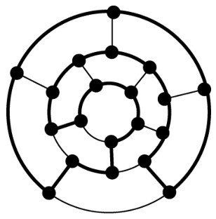
图2-15
由于正四面体、正六面体、正八面体和正二十面体都是哈密顿图，所以还可以把哈密顿周游世界的游戏玩具用所有的正多面体来制作。图2-16中的粗实线表示哈密顿回路。
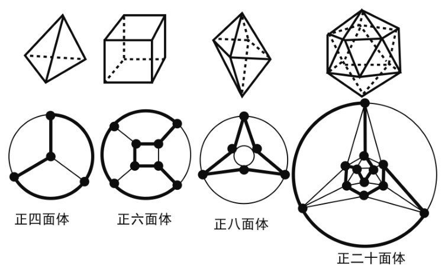
图2-16
类似周游世界的问题很多，解法多样。图2-17中的长方体框架有12个顶点，一只蚂蚁可否从A点出发、无重复地爬遍所有的顶点后到G点。如图2-17所示，将框架上的12个顶点相间地涂成黑白两色（相邻两点异色）。若存在这样的路线，则从A点出发的路线经历的顶点颜色应为：
白→黑→白→黑→白→……
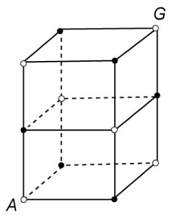
图2-17
这就是说双数步走过的点为黑色，单数步走过的点为白色。因到G点时为第12步，所以它的颜色应为黑色，然而在上述涂色中它却为白色，故本题无解。
上面讲的是在哈密顿图上寻找哈密顿回路的事，但给你一个图，你怎么判断它是不是哈密顿图呢？当然如果图的顶点不多，你可以通过找哈密顿回路进行判断，因为如果有哈密顿回路，这个图就是哈密顿图。这是最常见的逐一尝试的方法，更高效的判断方法仍在探索中。
通过棋盘上的每个方格有且仅有一次，并跳回到出发时的方格中。这就是棋盘上的马步哈密顿回路问题。
大数学家欧拉曾研究过这个问题，也得到了一个普遍适用的解法。但这个解法要多次调整，十分麻烦。1840年，数学家罗杰特提出了一种简单而巧妙的办法，可在棋盘上形成马步哈密顿回路。他把棋盘分为上下左右4部分，再把每个角一分为四，如图2-18（a）所示。在每个小组的4个方格中，分别标以同样的字母a,e,l,p，其位置在一个方角的4组中是互不相同的，而4个方角的相同位置应对应相同。从这种安排方式中我们看到，在每个方角中，元音a和e所在的方格构成一个环，辅音l和p所在方格构成了方角的对角线；而由同一字母标注的16个方格正好处在一个回路，整个棋盘形成了4个回路。这里需要解释一下“回路”的概念：例如标a的4个正方形，从左上角标a的方格可以跳到右上角标a的方格，接着可以跳到右下角标a的方格，以此类推。这样就形成了一个回路，4个字母就有4个回路。我们可以顺次在标字母p的方格中填入1～16，在标字母a的方格中填入17～32，在16个l中填入33～48，在16个e中填入49～64，分别形成4个回路。现在的问题是怎样把这4个回路合并成一个大回路。为了使合并的过程尽可能简单，要遵守如下两条规则。
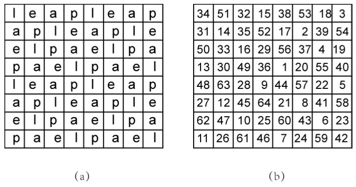
图2-18
① 所选的起点方格和终点方格应分别标有辅音字母和元音字母。为此，要轮流取标辅音的回路和标元音的回路，以起始方格所标辅音的回路开始，以终止方格所标元音的回路结束。
[此书 分 享微 信jnztxy]②每个回路的旋转方向要一致，而且不要在方阵的四角或边缘方格上终止。
以图2-18为例，我们以标p的方格开始。第1个回路是标p的16个方格，第2个回路是标a的16个方格，第3个回路是标l的16个方格，最后是标e的16个方格，都取顺时针方向。这4个回路都是中心对称图形，且具有连贯性，仅从32到33是例外，没有转入下一方角，仅在本方角中接续，这样形成的哈密顿回路见图2-18（b）。
本章最后来介绍一下哈密顿其人。1805年，哈密顿生于爱尔兰都柏林的一个律师家庭。5岁通晓拉丁文，14岁时已经学会了12种语言，13岁时因为阅读牛顿的《普遍算数》一书而对数学产生了强烈兴趣。1823年，哈密顿进入都柏林三一学院学习，开始对天文学展露出特殊的天赋和偏爱。大学尚未毕业，他便成为天文学教授，并被任命为天文台台长，时年22岁。1832年，哈密顿当选爱尔兰科学院院士，成为当时成绩卓著的科学大师。由于操劳过度，他于1865年去世，时年60岁。
哈密顿善于解决各种特殊问题，再把对具体问题的研究方法与结论总结为一般性理论，发表的著作有140余篇。此外，他在力学、数学和光学上都有杰出贡献，其中在数学上有深远影响的成就是四元数和哈密顿图。哈密顿为人谦虚诚恳，重视外语学习和科研。文章写得好，教书教得好，著作亦十分畅销，是19世纪青年人崇拜的典范。